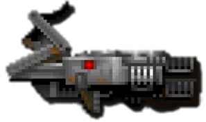
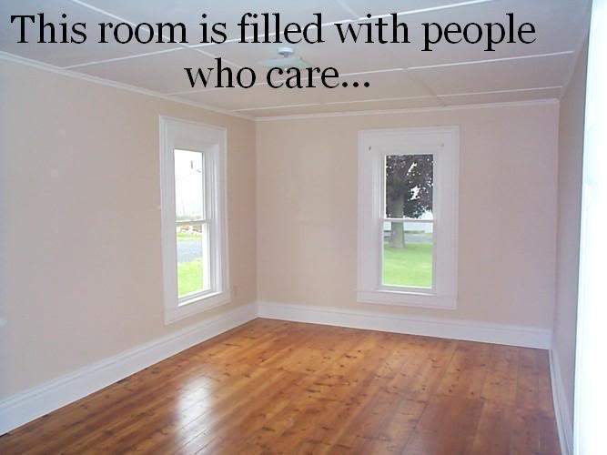
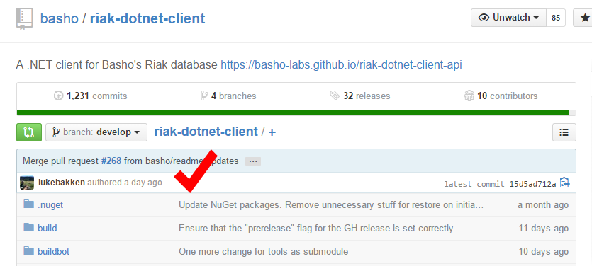
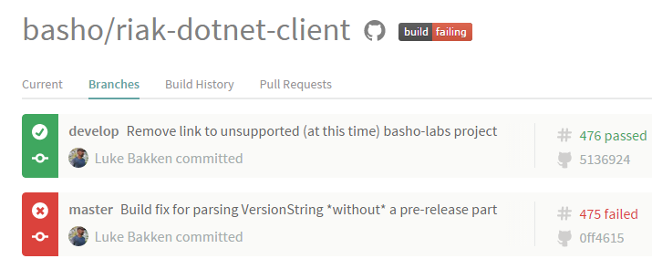
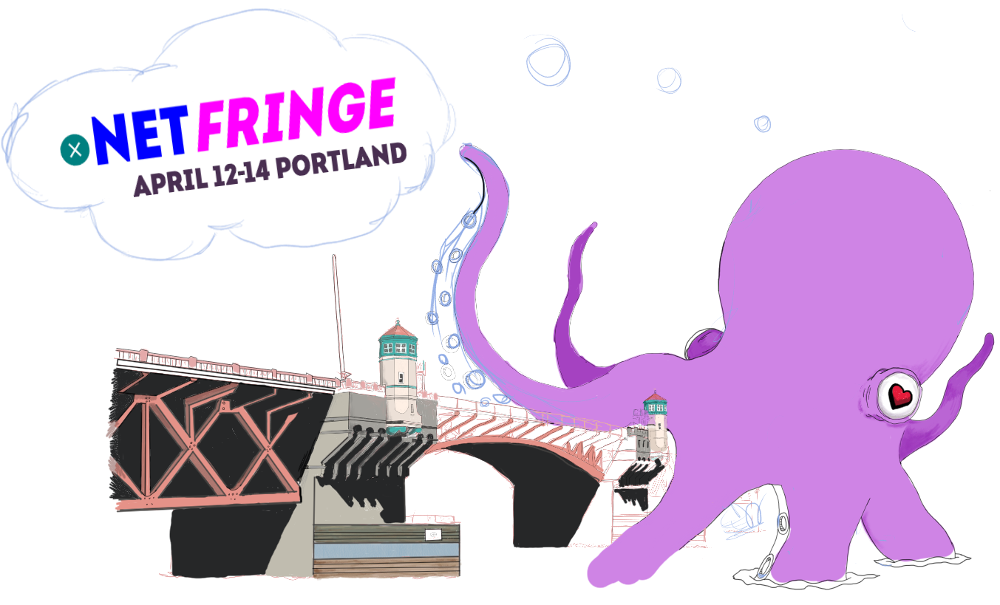

Stewardship of the Open-Source Riak .NET Client
Introduction
- Iron Foundry
- Riak .NET Client
- Riak NodeJS Client
Stewardship
Meeting the needs of your users
- End-Users
- Contributors
- Owners - you!
Corrugated Iron History
- 2011 01 - Started by Jeremiah Peschka and OJ Reeves
- 2013 09 - 1.4.2 release
- 2014 05 - Corrugated Iron needs new home
- 2015 01 - Alex Moore & myself on project full-time
- 2015 03 - v2.0.0 release
Transferring Ownership
Transferring Ownership
- GitHub
- corrugatediron.org
- NuGet
- Misc
- Copyright
State of the Code
How's the code base holding up?
Licensing
Apache 2.0
//
// Copyright (c) 2011 - OJ Reeves & Jeremiah Peschka
// Copyright (c) 2014 - Basho Technologies, Inc.
//
// This file is provided to you under the Apache License,
// Version 2.0 (the "License"); you may not use this file
// except in compliance with the License. You may obtain
// a copy of the License at
//
// http://www.apache.org/licenses/LICENSE-2.0
//
// Unless required by applicable law or agreed to in writing,
// software distributed under the License is distributed on an
// "AS IS" BASIS, WITHOUT WARRANTIES OR CONDITIONS OF ANY
// KIND, either express or implied. See the License for the
// specific language governing permissions and limitations
// under the License.
//
Hosting

Continuous Integration
TeamCity
Issue / Feature Tracking
Build Process
Different scripts for each task:
- Building project
- Publish release (manual steps)
- Rebuild message classes from protobuf message files
Riak Support
- 1.4 series: 100%
- 2.0 series: 50%
Developer Improvements
Build Process
Clone It And Build It™
- Windows
- Dependencies: .NET 4 Framework, Powershell
- Build: make.cmd/make.ps1 & MSBuild
- Mono
- Dependencies: Mono 2.10, GNU Make
- Build: make & xBuild
Code Analysis
- StyleCop
- FxCop (if present)
Test Suite
Support Scripts
- Set up Riak cluster
- SSL Certificate Authority
Automation

C:\Users\lbakken\Projects\basho\riak-dotnet-client
[develop]$ .\make.ps1 -Target Publish -VersionString v2.0.1
Repository

End User Improvements
NuGet
RiakClient created as new project
Riak 2.0
- New features: Security, Data Types, Search 2.0
- 99% backwards compatible API
- Still Riak 1.4 compatible
CLS Compliance

Calling all F# developers...
Documentation
Documentation
Summary
Documentation Matters
#1 priority for end-user
Project activity matters


Thanks
